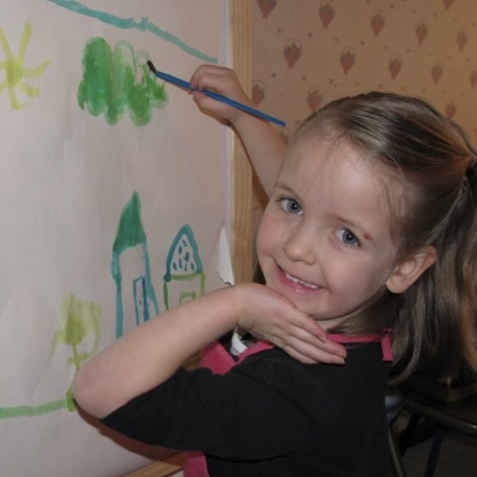
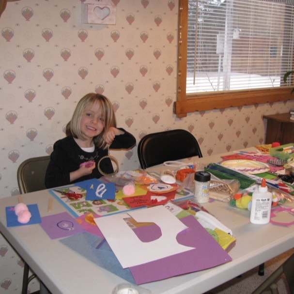

Hey! I'm Naiya. I'm currently finishing (hopefully) my Bachelor's in behavioral psychology with a minor in fine arts at BYU-Idaho, on my way to becoming a licensed art therapist. Creativity has been the foundation of who I am from day one. (Little me was a paint wielding menace to anything clean.) That passion was lost for a time, before I rediscovered in high school how much art was able to help me process emotions. There's a huge impact that art can have on people both spiritually and in the psychological benefits of creative expression. When I'm not studying, you'll probably catch me traveling, exploring the woods, playing guitar, winning card games, master procrastinating, or collecting some other strange new hobby. Thanks for stopping by my page!! Come back soon (Or never leave)

